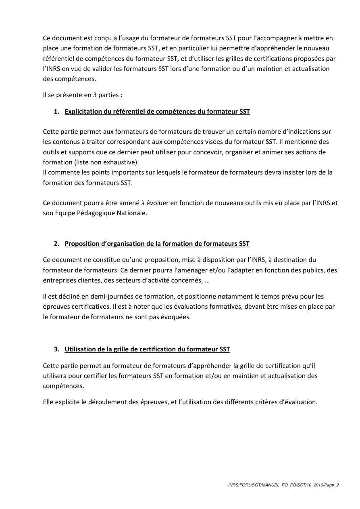

Arborescence conservée
Le PI d’origine reste central, sans simplification ni réécriture.
Outil pédagogique
Le support local assets/html/pi/PI_SST.html est intégré tel quel, avec des liens rapides vers C5, les urgences et les gestes par situation.

Le PI d’origine reste central, sans simplification ni réécriture.

Depuis cette page, accéder directement à C5, au livret, aux urgences et aux gestes critiques.
Support arborescent intégré depuis le dépôt sans transformation du contenu source.
Lecture directe du vrai fichier arborescent local.
Accès clair vers les situations d’urgence et les modules associés.